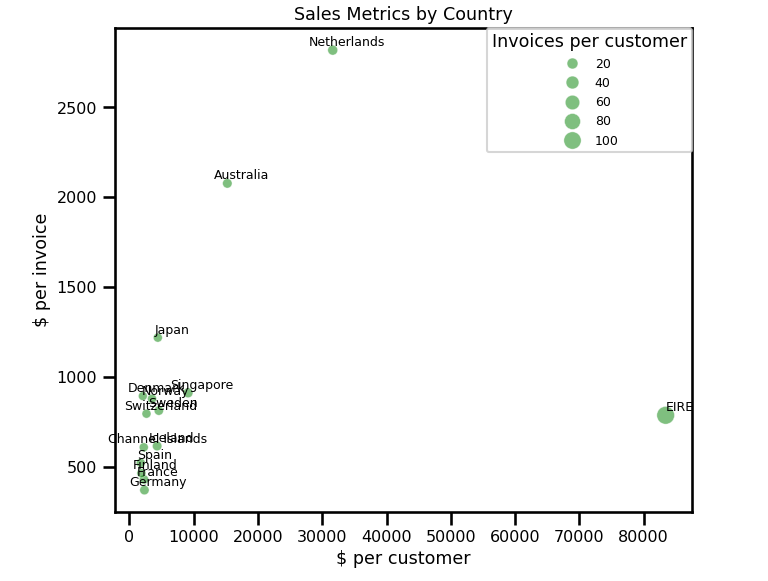

DBSCAN Clustering
This section breaks down how KMeans was applied to customer segmentation. Below you'll find tiles for code snippets, charts, and tabular data.
You can find the code in this link: Colab Notebook
Data Source The dataset containing online retail transactions from 2009 to 2011. It includes customer purchases, product details, invoice dates, quantities, and pricing information.
Glimpse of data

Data Cleaning We cleaned the data by removing missing entries, dropping invalid records like negative quantities, and ensuring proper data types for dates and numerical columns. This helped maintain data integrity for accurate analysis.
Data Preprocessing We engineered new features like Total sales, Hour, DayOfWeek, Month and Year are created from existing columns. We also created an RFM (Recency, Frequency, Monetary) table and applied scaling to prepare the data for clustering models like KMeans and DBSCAN.
Top 5 sold products

Top 10 country with more customers

Sales metrics by country
RFM Score
The purpose of the RFM score is to segment customers based on their Recency (how recently they purchased), Frequency (how often they purchase), and Monetary (how much they spend). It helps businesses identify and prioritize key customer groups like loyal buyers, at-risk customers, or high spenders for targeted marketing and engagement strategies.
from matplotlib import pyplot as plt
top_10_scores['RFM_Score'].plot(kind='line', figsize=(8, 4), title='RFM_Score')
plt.gca().spines[['top', 'right']].set_visible(False)